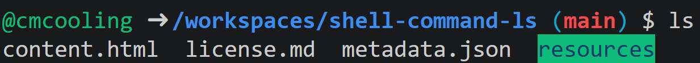

The ls command is used to list the contents of the current working directory. It is available in shells in many Unix-like operating systems. Some shells with support for the ls command include:
bashzshPowerShell (not a Unix-like system, here ls is technically an alias for Get-ChildItem)An example output may look like the following:

In the above example, the files in the current directory are listed, along with the name of a directory highlighted in green. Note that the exact formatting of the output can vary depending on the shell and its configuration.
To list the contents of a specific directory, you can provide its path as an argument to the ls command. This path may be relative to the current working directory or absolute. For example:
ls local_directory
ls /absolute/path/to/directory
At the top of the page is a link to a Codespace. Click it and open the terminal. Try using the ls command to list the contents of the entire workspace, and then of the resources directory.